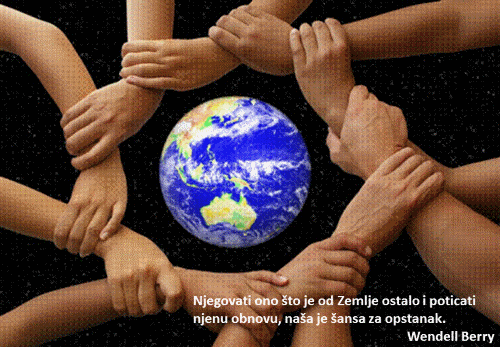
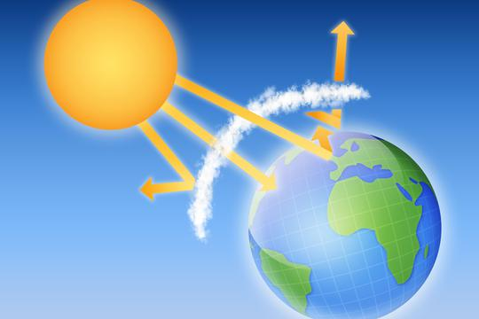
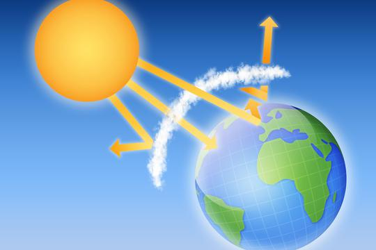

Novosti



Globalni problem onečišćenja.
Onečišćenje, onečišćavanje ili kontaminacija je prisutnost neke strane kemijske tvari (onečišćivala) u okolišu, u koncentraciji ili nepostojanom obliku koji u kraćem vremenu ne uzrokuje izravnu štetu za zdravlje ljudi ili drugih živih organizama. Industrijska djelatnost početkom 21. stoljeća...
Veliki interes građana za obnovljive izvore energije
Obnovljivi izvori energije, obnovljivi izvori dobara ili obnovljivi resursi su izvori materijala ili energije koji se stalno ili određenim postupcima obnavljaju pa se tako mogu iskorištavati bez iscrpljivanja...

Zanimljivosti vezano za ozonski omotač.
Ozonski omotač ili ozonski sloj je dio Zemljine atmosfere (stratosfera) koji sadrži relativno visoku koncentraciju ozona, a to je između 10 do 50 km iznad Zemljine površine...